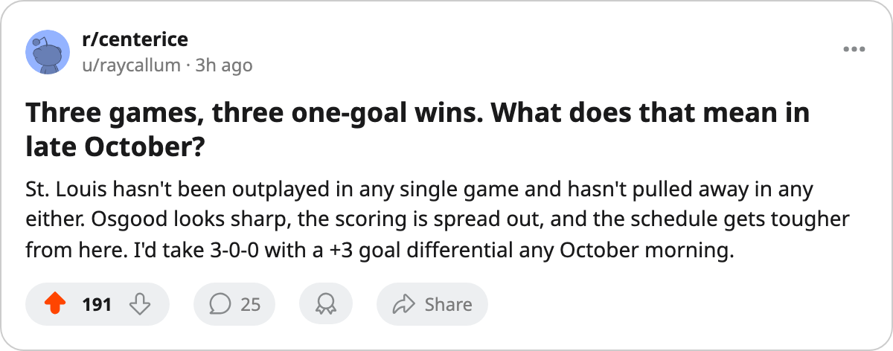

SERIES CHECK: St. Louis and Vancouver meet again Tuesday, and all 3 Blues wins have been by 1 goal
Chris Osgood is 3-0-0 and the Blues have not been outscored in any frame of any game this season
 Ray CallumSenior correspondent · Home Ice Network
Ray CallumSenior correspondent · Home Ice Network
The  St. Louis Blues have won 3 straight by a combined 3 goals. They beat
St. Louis Blues have won 3 straight by a combined 3 goals. They beat  Detroit Red Wings 2-1 on October 10, took
Detroit Red Wings 2-1 on October 10, took  Vancouver Canucks 3-2 on the road on October 12, and edged
Vancouver Canucks 3-2 on the road on October 12, and edged  Edmonton Oilers 4-3 in overtime on October 17.
Edmonton Oilers 4-3 in overtime on October 17.
 Chris Osgood85 started all 3 and is 3-0-0. The Blues allowed 2 goals to Detroit, 2 to Vancouver, and 3 to Edmonton. The 6 goals against ties Tampa Bay's total for the fewest in the league through 3 games.
Chris Osgood85 started all 3 and is 3-0-0. The Blues allowed 2 goals to Detroit, 2 to Vancouver, and 3 to Edmonton. The 6 goals against ties Tampa Bay's total for the fewest in the league through 3 games.
The Tuesday rematch with Vancouver Canucks is the second meeting of the season. St. Louis won the first, 3-2 in Vancouver, on October 12. The Canucks have since split a pair with  Calgary Flames and sit 5th in the Western Conference at 5 points. The Blues lead their conference's Central Division at 6.
Calgary Flames and sit 5th in the Western Conference at 5 points. The Blues lead their conference's Central Division at 6.
| Date | Location | Score | Result |
|---|---|---|---|
| Oct 10 | Home vs DET | 2-1 | W |
| Oct 12 | At VAN | 3-2 | W |
| Oct 17 | Home vs EDM | 4-3 (OT) | W |
Three one-goal wins in three games, and the Blues are finding a way to close. Osgood is 3-0-0, and the back end has held just enough in every frame.
The  Colorado Avalanche trade filed October 15 sent Riku Hahl and Yury Stashan from Colorado to Tampa Bay in exchange for Lance Ward, Arron Asham, and Tim Taylor. St. Louis sits one spot ahead of Colorado in the West at 6 points to 4, and the Blues face Colorado Avalanche on the road November 27.
Colorado Avalanche trade filed October 15 sent Riku Hahl and Yury Stashan from Colorado to Tampa Bay in exchange for Lance Ward, Arron Asham, and Tim Taylor. St. Louis sits one spot ahead of Colorado in the West at 6 points to 4, and the Blues face Colorado Avalanche on the road November 27.
St. Louis hosts Vancouver at 7:30 Tuesday, then travels to  Nashville Predators on October 24. No other club has three straight one-goal wins right now.
Nashville Predators on October 24. No other club has three straight one-goal wins right now.
